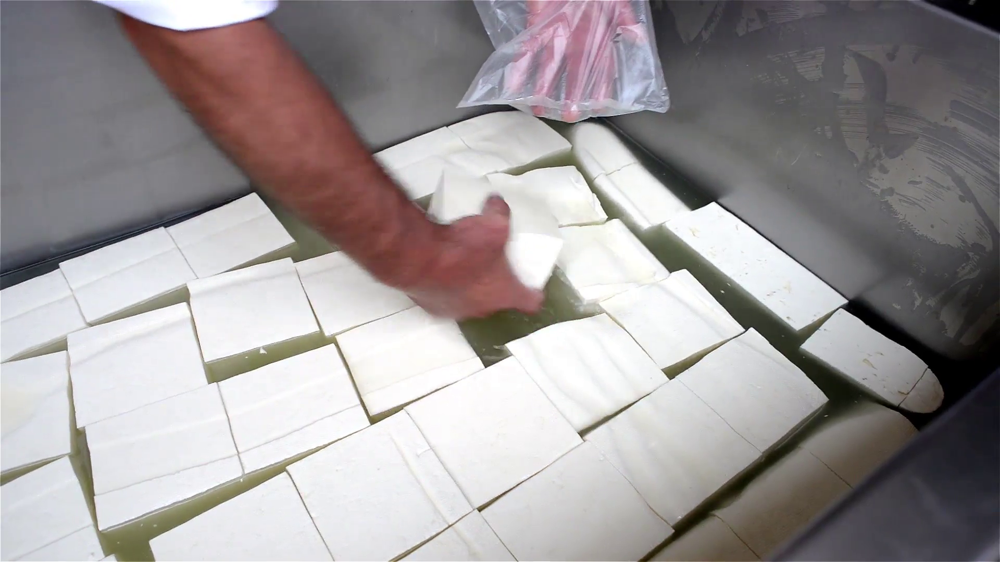

It all starts with the milk. When the milk arrives at the factory, it is poured into large vats.
Some starter bacteria is added to the milk. This starts the cheesemaking process and also adds flavour and texture. An enzyme called 'rennet' is also added to curdle the milk.
When it is curdled, there is a thin, watery layer or liquid left on top called whey protein. Cheesemakers remove the whey, then add salt.
The curds are then cut into smaller pieces and heated to remove the remaining whey.
The whey drains off, leaving the curd tightly-packed. The curd is then pressed into a mold.
Depending on the type of cheese being made, this is the aging stage, where the cheese is left for months or years to sharpen its flavour.
The cheese is packaged, and delivered to be enjoyed by consumers.
Not every cheese is made the same way. Mozzarella is kneaded before being completely formed, giving it its signature stringy quality, and swiss cheese uses a bacteria that gives off carbon dioxide, which makes the bubbles in the cheese.
Madehow has more information on this process.
Milk pouring: Rural Marketing, https://www.ruralmarketing.in/news/agriculture/milk-production-grows-constantly-over-6/. Retrieved 2019-06-06.
Curd cutting: Wikipedia, https://en.wikipedia.org/wiki/Manufacture_of_cheddar_cheese/. Retrieved 2019-06-09.
Curd cubes: Storyblocks, https://www.videoblocks.com/video/lumps-of-milk-white-cheese-in-vat-full-of-salty-water-in-a-small-home-dairy-farm-sgavyyauiqdgmnxj/. Retrieved 2019-06-09.
Cheese packaging: Yousense.inc, http://yousense.info/7363686f6368/schoch-dairy-and-creamery.html/. Retrieved 2019-06-06.
This is a validator link.